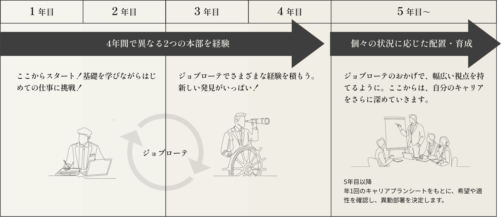
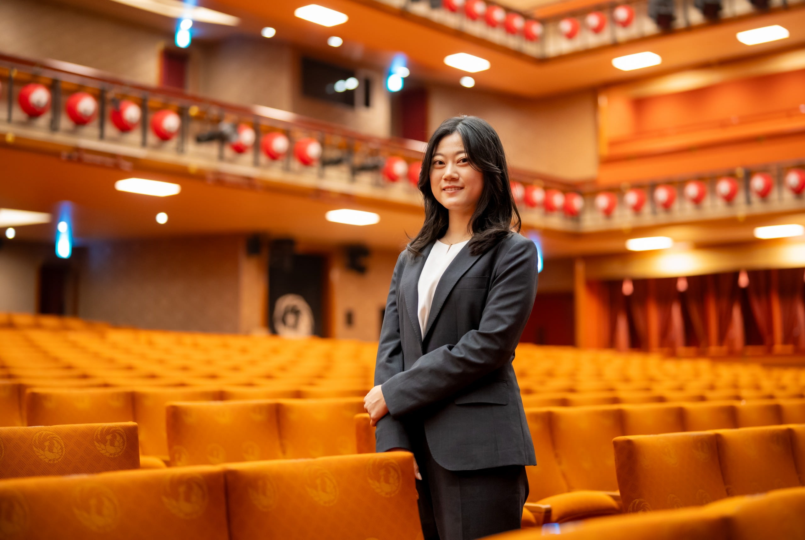

career story
歌舞伎のすばらしさを
広く発信していく
歌舞伎座 宣伝部
2020年入社
理学部数学科卒
中嶋 栞菜
job
rotation
松竹では、社員一人ひとりの適性やキャリアの可能性を最大限に引き出すため、ジョブローテーション制度を導入しています。若いうちに多様な業務経験を積むことで、自身の適性を見極め、より充実したキャリアを築くサポートをしています。

１年目
歌舞伎発祥の地で、
劇場運営の基本を学ぶ
最初の配属は、京都の南座です。歌舞伎発祥の京都の地に建ち、松竹の創業の地にも近い南座は、歌舞伎が大好きで入社した私にとって思い入れのある劇場。その劇場の最前線で、松竹のビジネスにとって基本となる、お客様をおもてなしする姿勢を学びました。
1年目から携わったのは劇場の運営。それこそチケットのもぎりも経験し、案内看板の作成など劇場内の整備、さらにはコロナ禍が始まった時期だったこともあり、その対応策の検討なども行いました。2年目からは、販売営業も担当し、実際の営業にも携わりました。修学旅行で京都を訪れる学校を誘致するために、電話をかけ続けるという経験も。お客様に劇場に足を運んでいただくことの大切さ、難しさを実感しました。
南座では、歌舞伎ばかりでなく、一般のコンサートやエンタメ系のイベントなどいろいろな公演を行っています。それらに触れられたことも、歌舞伎しか知らなかった私にとって大きな糧になりました。また、「せっかくの機会だから」と上司が配慮してくれて、大阪松竹座での業務も経験しました。東京育ちの私にとって、この2年間は初めてのひとり暮らし。京都出身の先輩に教わりながら京都ライフを満喫できたのもよい思い出ですね。
3年目
経理という仕事を通じて、
松竹の事業を俯瞰する
私は学生時代に数学を専攻していて、数字はけっして苦手ではなかったのですが、経理部への異動は意外なキャリアステップでした。主に担当したのは、決算に関わる業務。毎月、各事業本部から上がってくる経理データをとりまとめ、必要があれば担当者に確認して調整などを行いました。定期的に実施される会計監査への対応、さらに松竹では経理部が内部統制も兼務しており、それらに関連する業務にも携わりました。印象に残っているのは、インボイス制度導入に向けてプロジェクトチームのリーダーを任されたこと。各事業本部の経理担当者にヒアリングしてそれぞれ特徴的な決算の流れを把握し、全社的なルールづくりや経理システムの改修などに取り組みました。
南座では劇場の最前線で演劇の基本を学びましたが、経理部ではもっと広い視点に立って松竹全体の事業を知ることができました。たとえば映画製作における「製作委員会」の役割など、エンターテインメントに関する幅広い知識を得ることができたのはかけがえのない経験でした。また、各部の室長などと交渉する機会も多く、単に「経験を積む」のではなく、ビジネスパーソンとしてしっかり成長することのできた2年間だったと思います。
５年目
歌舞伎のすばらしさを
広く発信していく
4年間のジョブローテーション期間を経て、この夏、歌舞伎座の宣伝部に異動しました。学生時代に歌舞伎に出会って感動し、この演劇のすばらしさを多くの人に伝えたいと思って入社した私にとって、ずっと想いを寄せ続けていた仕事。異動してきて最初にポスター制作を担当した公演が、偶然にも私が初めて観た歌舞伎の演目と同じで感動しました。このように、チラシやポスターなど広告宣伝物の制作、撮影の立ち合い、新聞や雑誌・テレビ局向けのパブリシティなど、さまざまな業務に携わっています。とはいっても、異動してきてまだ3か月ほどなのですが……。
この秋に上演された特別公演では、歌舞伎座の若手社員たちとプロジェクトチームを組んで特別企画を実施しました。大道具さんに相談してリアルな「顔はめパネル」を制作・展示したり、スタンプラリーを実施したり、お客様が楽しんでいる様子がSNSにもアップされて嬉しかったですね。
いまはまだ任せられた仕事をこなすだけで精一杯ですが、今後は経験を積んで自分らしい企画をどんどん提案していきたいですね。そして、チャンスがあるなら、歌舞伎の企画製作にも携わってみたい。歌舞伎の魅力をひとりでも多くの人たちに発信していく仕事に取り組んでいきたいと思っています。

message
これから歩んでいく、私の“松竹人生”にとって すばらしい経験を積むことができました。
入社して4年間のジョブローテーションを経験してみて感じるのは、とても充実した制度だということ。時には想定外と思うような部署に配属されるかもしれませんが、それはそれ。誰もが必ず大切な財産を得ることができるはずです。
そう私が自信を持って言えるのは、この4年間でたくさんの素敵な上司や先輩に出会うことができたから。南座でも、本社の経理部でも、若手社員にできる限りの経験を積ませようと、懸命に考えて情熱を持って接してくれました。その熱意に触発され、私も「学べるものはぜんぶ学ぼう！」精神で仕事に向き合いました。松竹ならではのこのすばらしい風土を、ぜひ体感してほしいと思っています。